Сэтоути · круиз · рёкан на воде
Ганцу: маленький рёкан, который плавает по Внутреннему Японскому морю
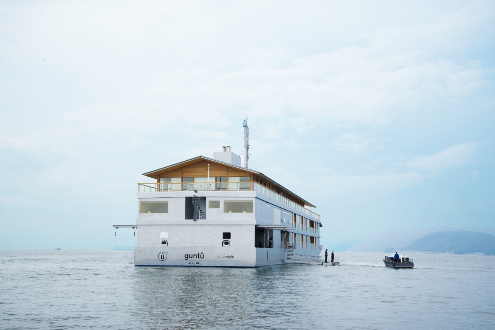
В октябре 2017 года по Внутреннему Японскому морю вышел корабль, не похожий ни на один лайнер: Ганцу, девятнадцать кают-сюит, много дерева и идея маленького знаменитого рёкана, который вместо сада в камне смотрит на острова.
Имя
Краб для мисо-супа
Ганцу (guntu): так в Ономити ласково называют каменного краба. Мясо этого морского краба даёт наваристый бульон, поэтому местные кладут его главным образом в мисо-суп. Корабль назвали в честь краба не случайно: создателям хотелось, чтобы он, как этот скромный местный деликатес, пришёлся по душе и гостям, и жителям побережья.
Идея видна и в облике. Если обычный лайнер это отель, поставленный на воду, то Ганцу скорее маленький известный рёкан, который плавает по морю. Фасад ничем не щеголяет: корабль спроектирован так, чтобы вписаться в море Сэтоути, на котором живут и трудятся люди. Обслуживают гостей экипажи в духе местных жителей, которые знакомят путешественников с морем.
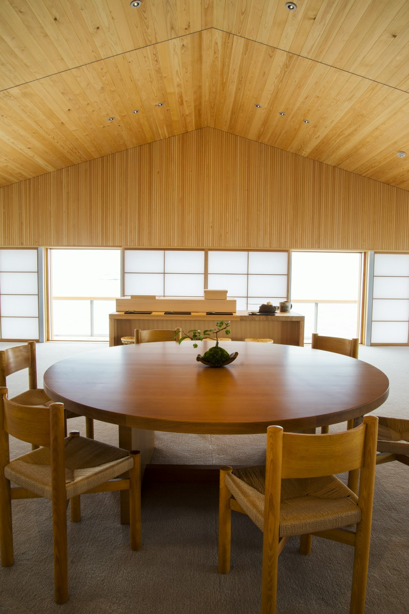
Пространство
Дерево, соль и никакого убранства
Проект доверили архитектору Ясуси Хорибэ, известному общественными зданиями. Внутри корабля много дерева: просторная простая роскошь, тепло и лёгкий запах леса. Лишних украшений нет вовсе: вся выразительность выстроена на фактуре добротного дерева.
Единственное, что висит на стенах, это керамические фрески: пейзажи-абстракции написаны пигментами из песка Сэтоути и держат интерьер так же, как в чайном павильоне держит свиток. В каждой каюте, в обеденном зале и в гостиной окна вырезаны так, будто в них вставили картину с пейзажем Сэтоути.
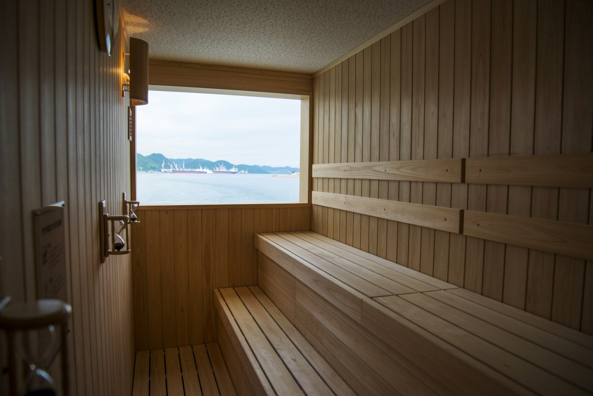
На корме устроен большой бассейн: садишься в просторную купель из кипариса хиноки, и колышущаяся вода в ней сливается с морской, так что кажется, будто паришь в самом море. Сауны здесь две: сухая и паровая; фанат Хорибэ постарался. В купели сухой сауны вода охлаждена ровно до 18 °C.
Каюта
Горизонт на уровне глаз
Кают всего девятнадцать, и все они сьюты площадью больше 50 м², четырёх типов; в части номеров есть открытая ванна. Привычной регистрации у стойки на борту нет: гостей сразу провожают в каюту. Окна прорезаны широко и поставлены так, что горизонт оказывается ровно на уровне глаз. Ощущение не «видеть море», а быть им обёрнутым. Пейзаж за террасой меняется буквально каждое мгновение.
Плывёшь мимо островов, чьи гребни ложатся в дымку слоями; под мостами дороги Симанами-кайдо пролёты нависают над самой палубой; за кормой вырастает город Такамацу. Каждая секунда иная, и глаз не устаёт.
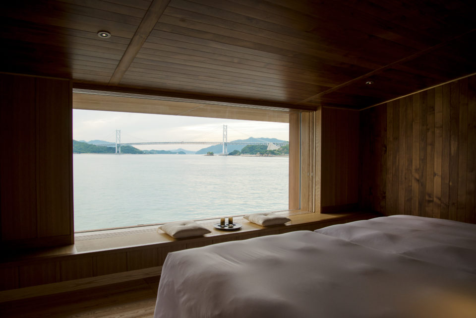
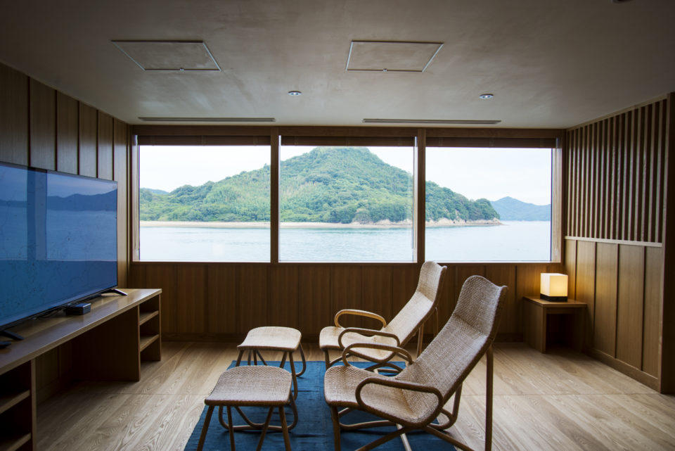
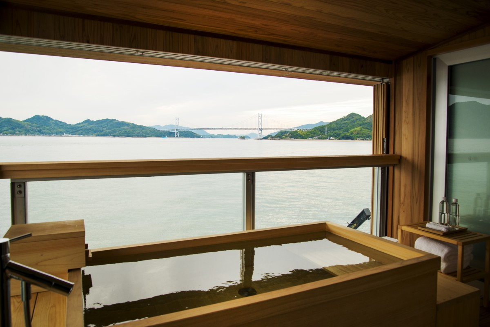
К закату гости сами собираются на открытой палубе и на энгаве: якорь уже отдан, и над Сэтоути разворачивается закат. Когда свет гаснет, у подножий островов и вокруг рыбацких лодок зажигаются огни: один, второй. Если считать пейзаж Сэтоути произведением искусства, то Ганцу оказывается единственным способом смотреть на него изнутри, будто ты часть этой картины.
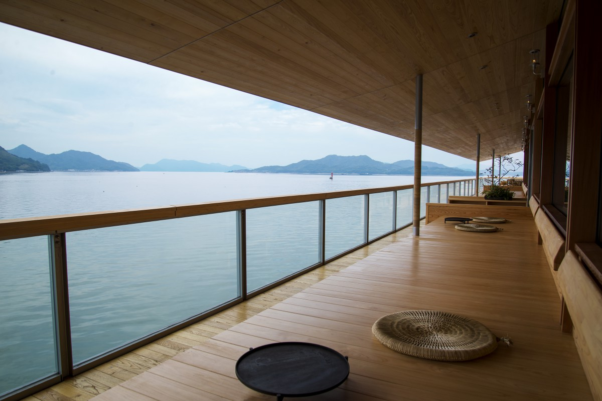
Палуба меняется вместе с часом дня: утром здесь накрывают завтрак, днём приносят напитки, а к вечеру столики занимают молчаливые зрители заката.
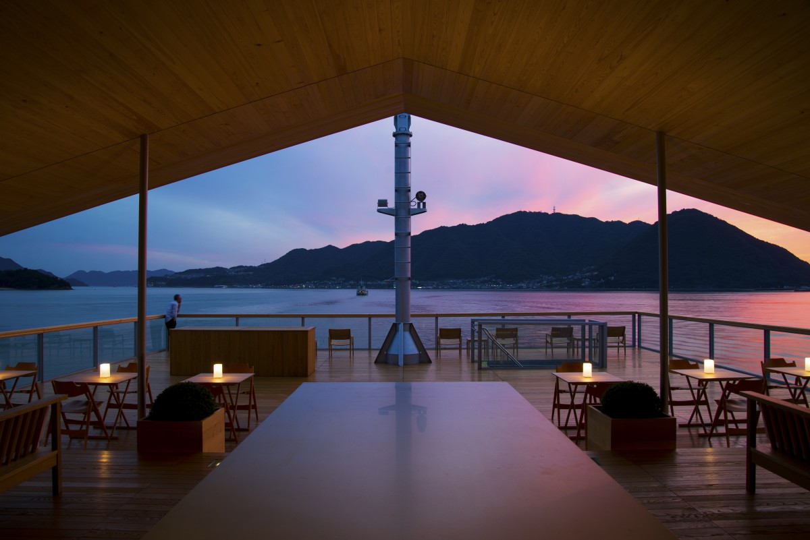
Кухня
Всё включено, и всё из Сэтоути
Питание на борту идёт по системе «всё включено». Рыба, мясо, овощи, фрукты, молочное и даже приправы привозят с побережья: попробовать здесь что-то не из Сэтоути труднее, чем наоборот. Рыба Сэтоути славится на всю Японию: море здесь мелкое, свет достаёт до дна, планктон кипит, и мелкие рачки и рыбки кормятся вволю, оттого вкус у рыбы глубокий.
Продукты завозят из портов захода, а рыбу, поднятую в этот день, рыбаки передают прямо на борт: что попадётся, сюрприз. Такая вера между кораблём и местными жителями тоже часть его силы.
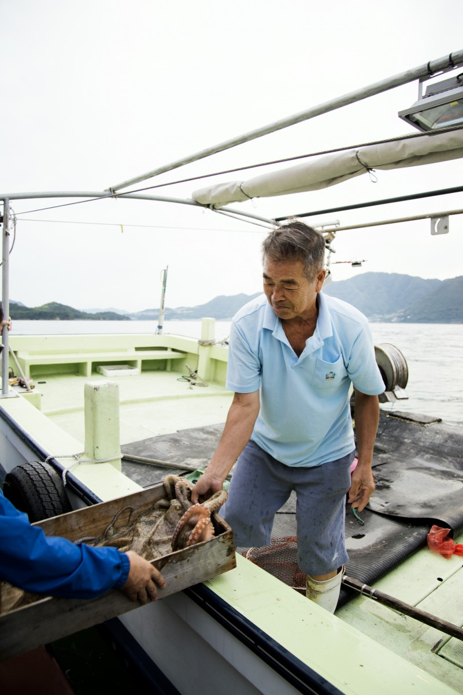
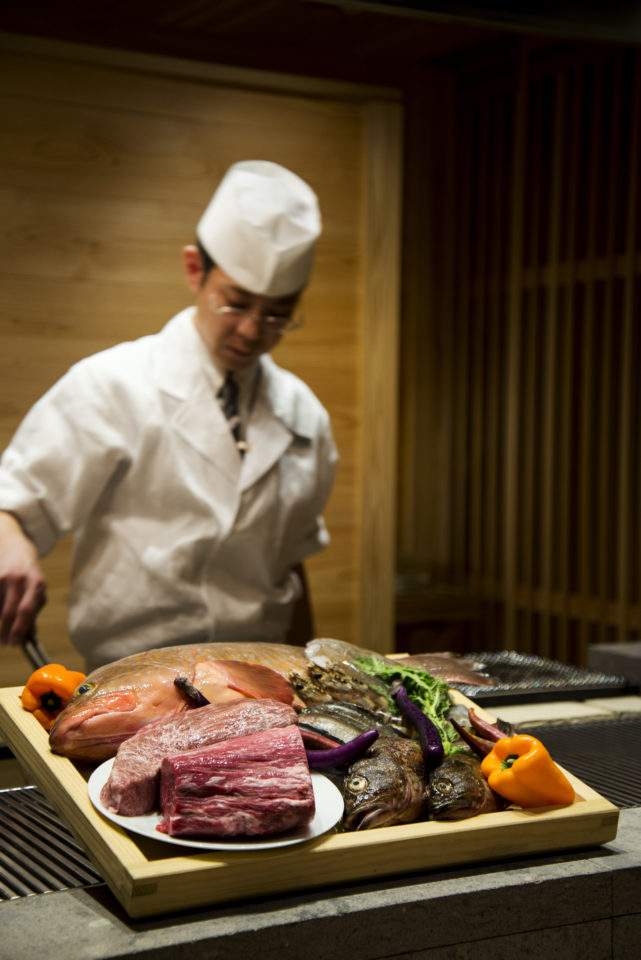
Обеденным залом руководит токийский японский ресторан «Сигэёси»: гость выбирает продукты, а пока повара жарят на углях, тушат или готовят караагэ, ему приносят несколько изящных закусок-обандзай.
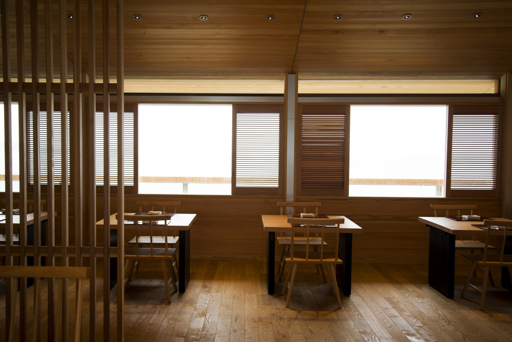
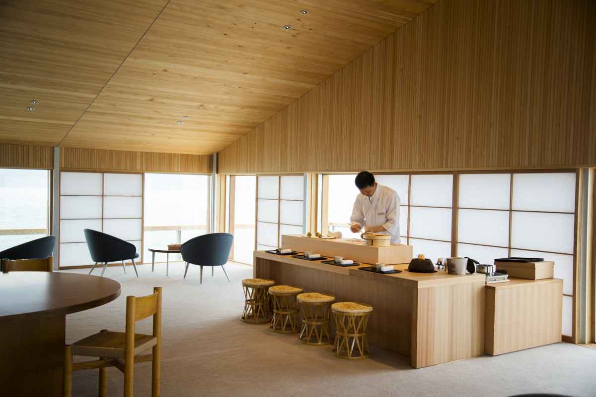
В углу зала вырезана суши-стойка: повар работает прямо за стеклом моря. Суши здесь готовят под наблюдением ресторана «Авадзисима Нобу»: нигири заправляют солью и соком судати, а рыба только из Сэтоути, от морского окуня сузуки до угря хамо и морского ежа, подают по кусочку.
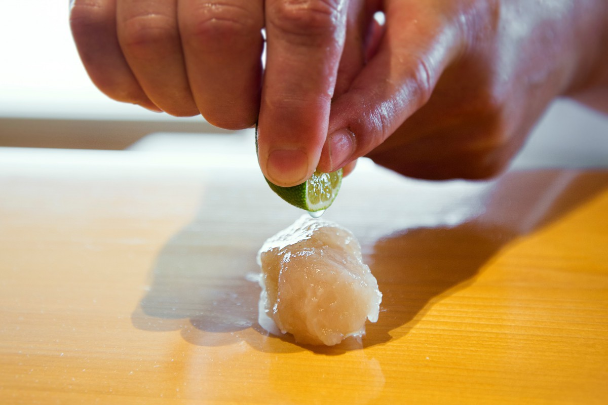
Вечером просите у бара фирменные коктейли: «Ред ай» с местной солью получается плотным и насыщенным, а шорт-коктейль на хомэйсю, местном лекарственном настое из Томо-но-ура, вяжет во рту травяными узорами так, что оторваться трудно.
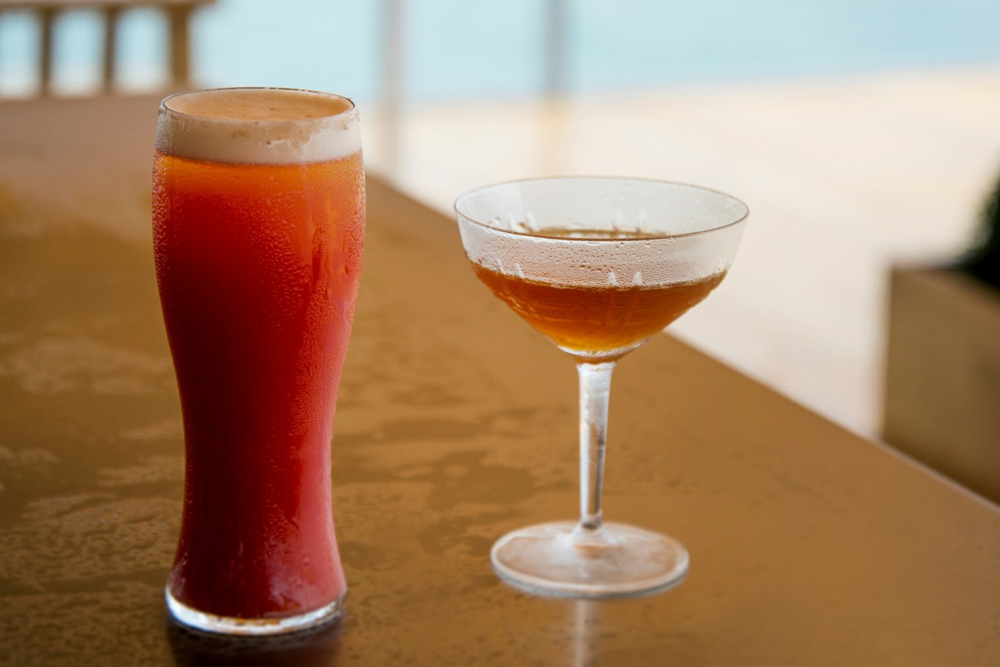
Берег
Сойти на берег и войти в чужую повседневность
На борту придумано много выходов на берег. От корабля к портовым городкам отходит лодка-тендер, человек на десять: сама поездка в ней уже маленькое приключение. Маршруты разные, но суть одна: заглянуть в повседневную жизнь Сэтоути. Гид или местный житель ведёт группу около часа, прогулка выходит и содержательной, и физически честной.
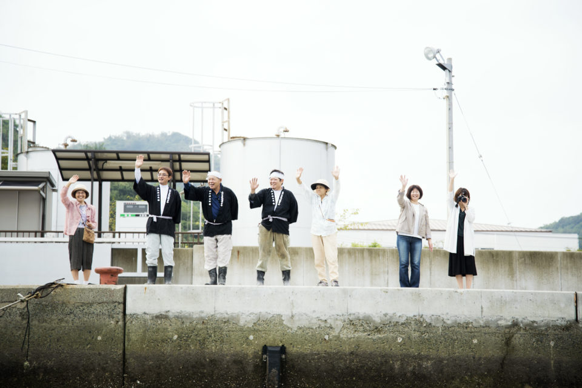
Самая простая программа называется «утренняя прогулка»: порт со старинной застройкой вроде Томо-но-ура и Ономити или остров Китаги, который издавна кормился каменоломнями, и в каждом выходе видно, что у Сэтоути не одно лицо, а многие.
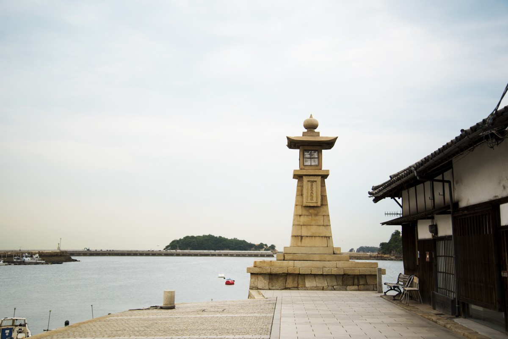
На набережных время идёт медленно: старые дома выходят фасадами прямо к воде, и каждый порт хранит свой ремесленный секрет.
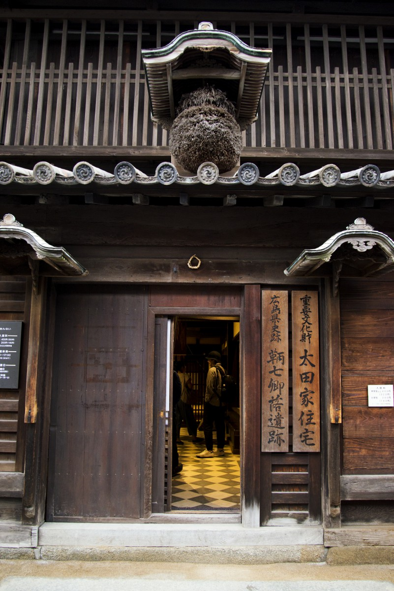
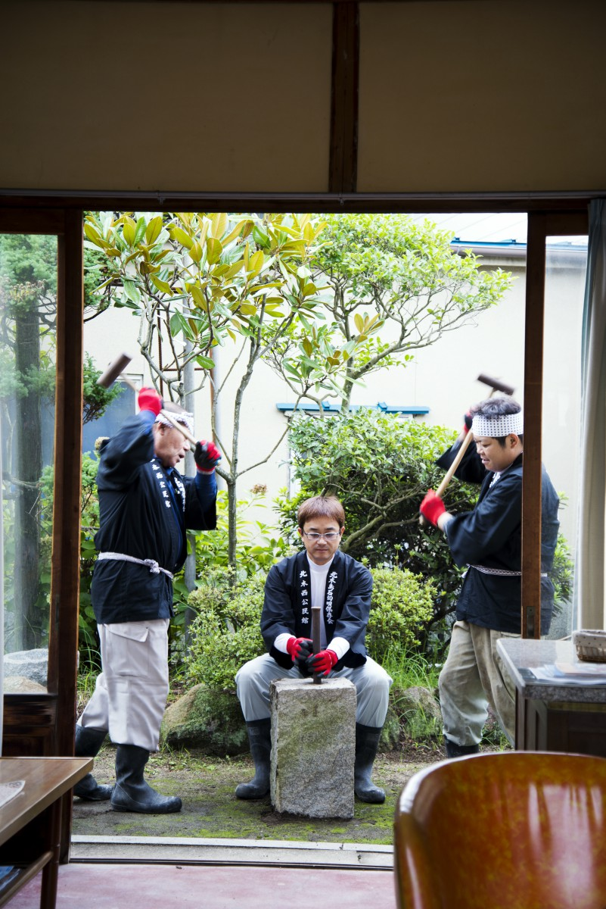
Есть и планы, каких не найдёшь больше нигде: на специальной лодке для любования луной поднять бокал местного сакэ или взять урок рыбалки у здешних рыбаков. А можно вовсе никуда не сходить: окунуться в баню, лечь на процедуру и провести весь день в каюте или на открытой палубе. Когда хочется, сколько хочется, что хочется: в этом главная прелесть Ганцу.
Практично
Как попасть на борт
Отплывает корабль от марины Bella Vista. Маршруты и порты заходов зависят от дат: Томо-но-ура, Ономити, остров Китаги и другие городки и острова Сэтоути. К запуску в 2017 году в токийском Империал-отеле открыли галерею Ганцу, где маршрут подбирали по видеороликам и стендам. Сегодня поездку бронируют через официальный сайт или по телефону.
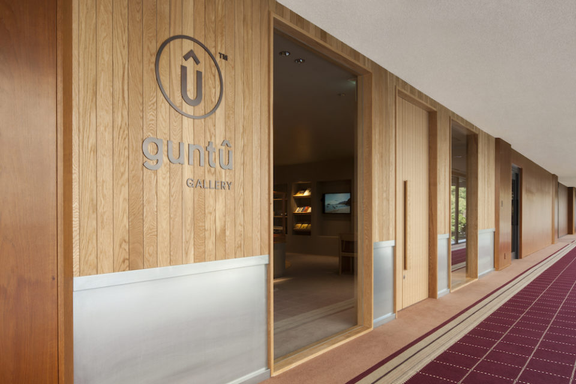
Ганцу (guntu)
- Порт отправления
- марина Bella Vista
- Каюты
- 19 сьютов четырёх типов, все больше 50 м²; в части кают есть открытая ванна; самая просторная, «Ганцу», 90 м²
- Питание
- всё включено: обеденный зал под руководством ресторана «Сигэёси», суши-стойка под руководством «Авадзисима Нобу»
- Маршруты
- по датам: порты захода меняются от рейса к рейсу, среди них Томо-но-ура, Ономити и остров Китаги
- Бронирование
- через сайт guntu.jp или по телефону 0120-489-321 (бесплатный номер, звонки только из Японии), info@guntu.jp
- Сайт
- guntu.jp